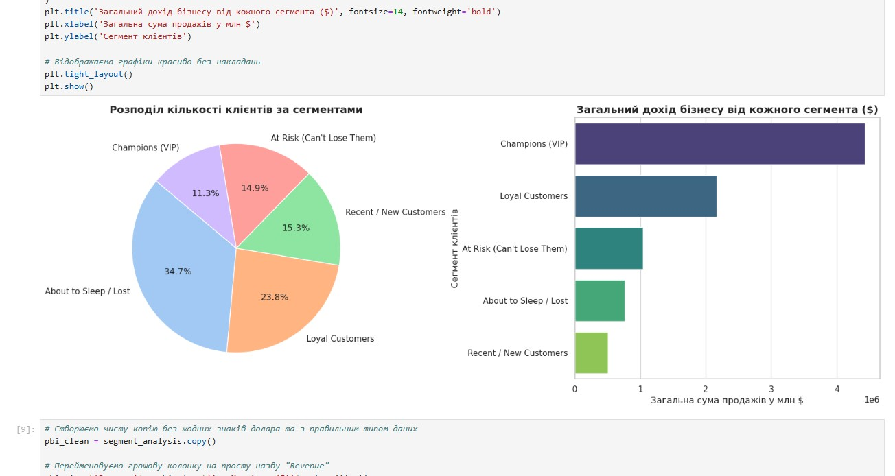
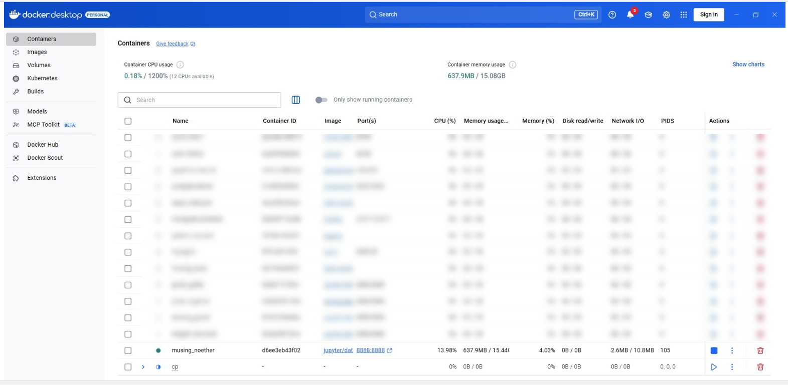
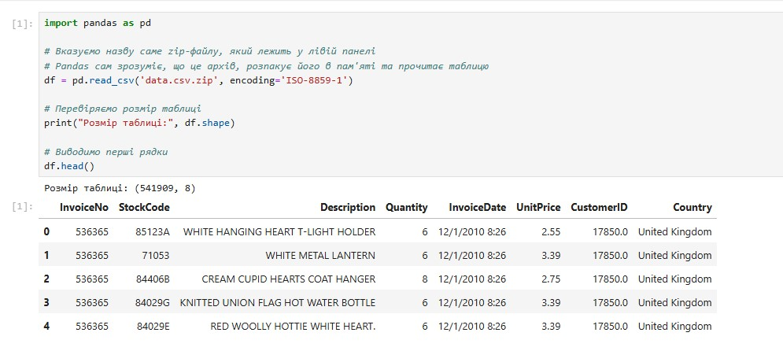
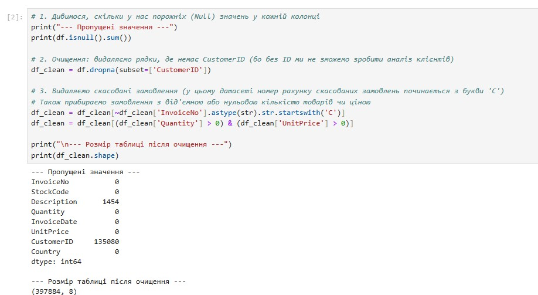
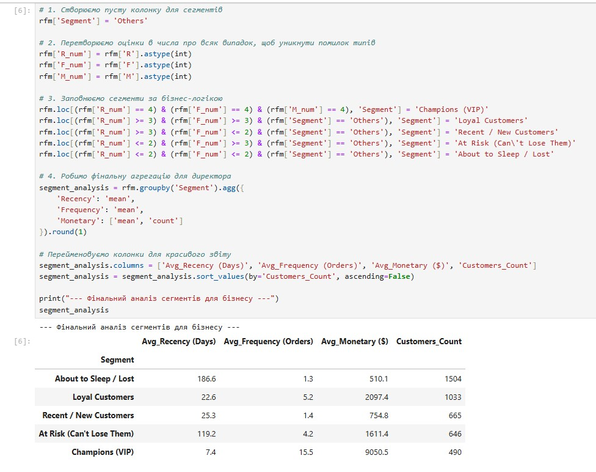
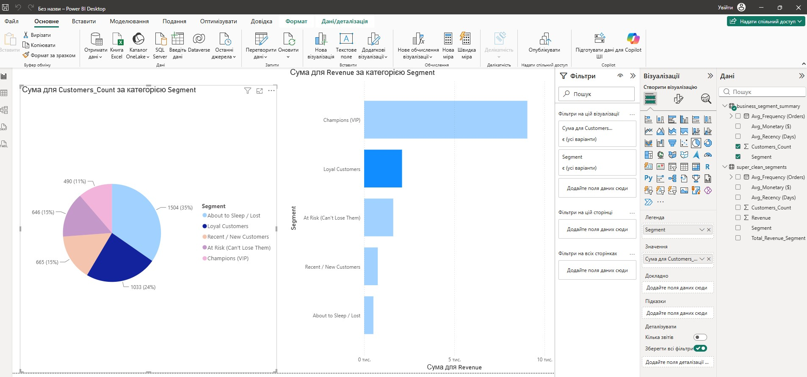

RFM-Сегментація Клієнтів:
Від Аналізу Даних До Стратегії Продукту
Професійний кейс по очищенню великих даних (540k+ рядків) у Python, контейнеризації в Docker та розробці динамічних маркетингових стратегій у Power BI для e-commerce.
Масштаб Даних та Ключові KPI
Показники e-commerce платформи після повного циклу очищення даних від аномалій та повернень за допомогою Pandas
Інструментарій
Для забезпечення точності та швидкості обробки великих даних було використано сучасний аналітичний стек:
-
Docker: Ізольоване середовище розробки та контейнеризації.
-
Python (Pandas): Очищення, фільтрація та трансформація масивів даних.
-
Matplotlib: Первинний аналіз розподілів та генерація інсайтів.
-
Power BI: Побудова фінальних інтерактивних бізнес-дашбордів.

Галерея розробки та артефактів
Візуалізація робочих процесів: від контейнеризації середовища до фінального дашборду





Структура Клієнтської Бази
Більшість клієнтів (34.7%) знаходяться в зоні ризику або вже втрачені, що вимагає негайних маркетингових дій.
Поведінка: Купували зовсім нещодавно, купують надзвичайно часто та витрачають найбільше грошей.
Продуктова стратегія: Головний фокус бізнесу. Впровадити VIP-програму лояльності (Early Access, персональний менеджер), оскільки вони генерують близько 50% усього доходу компанії.
Розподіл Доходу: Наочний Ефект Парето
Візуалізація генерації грошового потоку за сегментами (Загальна сума: $8.91M)
Стратегічні Бізнес-Рекомендації
Ключові кроки для оптимізації маркетингового бюджету та максимізації LTV на основі RFM-сегментації
Запровадити програму консьєрж-сервісу та раннього доступу до нових колекцій. Вартість втрати одного Champions дорівнює вартості залучення 10+ нових клієнтів, оскільки вони забезпечують майже половину всього доходу компанії.
Запустити автоматизовану email-кампанію з персоналізованими знижками на основі попередніх покупок. Це критично важливо, щоб запобігти остаточному відтоку цього цінного сегмента в категорію втрачених.
Переведення сегмента "Loyal" у статус "Champions" через інструменти підвищення середнього чека (Cross-sell, Up-sell).